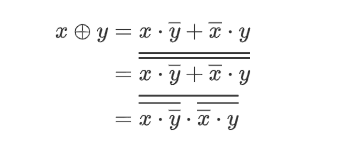

CSAPP Data Lab
CSAPP 的第一个 Lab，对应知识点为书中的第 2 章（信息的表示与处理），要求使用受限制的运算符和表达式实现一些位操作。主要分为两个部分：整数部分和浮点数部分。其中整数部分限制较多，比较偏重技巧性，部分题个人认为很有难度。而浮点数部分则比较基础，主要考察对 IEEE 754 标准的熟悉程度，代码较长，但思路相对简单。
bitXor
思路
使用德-摩根定律进行推导，推导过程如下：

代码
1 | int bitXor(int x, int y) { |
tmin
思路
最小整数即最高位（负数权重）为 1，其余（正数权重）为 0。
代码
1 | int tmin(void) { |
isTmax
思路
由于不能使用左移运算符，因此没办法直接构造出 tmax，需要仔细考虑 tmax 的性质：tmax = 0x7fffffff ，而 tmax + 1 = 0x80000000 ，这两个数的二进制位完全互补，因此满足：tmax + tmax + 1 = 0xffffffff，结果全为 1，对该结果取反即可得到 0，取非得到 1。
但这里还要考虑一个特殊情况：当 x = 0xffffffff 时，x + 1 + x 也满足等于 0xffffffff，因此需要借助异或运算进行特判。
代码
1 | int isTmax(int x) { |
allOddBits
思路
首先构造一个掩码 mask，奇数位全为 1，偶数位全为 0。将 mask 与 x 进行按位与，如果 x 的奇数位全为 1，那么按位与的结果仍然为 mask。然后便可以借助异或和非的组合，将结果转换为 0 或 1。
代码
1 | int allOddBits(int x) { |
negate
思路
补码表示法的重要特性，取反加一即可。
代码
1 | int negate(int x) { |
isAsciiDigit
思路
这里我用了比较笨的逐位判断的方法。首先判断第 4 到第 31 位是否为 0x3，然后只需要关注低 4 位的二进制表示了：若第 3 位为 0，则一定位于指定范围之内，再加上两个特例（1000 和 1001）即可。
最后将运算符的个数刚好卡在 15 个，勉强过关。
代码
1 | int isAsciiDigit(int x) { |
conditional
思路
很容易想到根据 x 的值是否非 0 构造出全 0 或者全 1 的数据 flag，然后将 flag 和 flag 取反后的值分别与 y 和 z 进行按位与，这样必然得到两个数：一个为 y 或 z 本身，另一个为 0，再将结果按位或即可。
构造的方法比较巧妙，需要注意到全 0 和全 1 分别代表整数 0 和 -1，它们分别是 0 和 1 的相反数，而 0 和 1 我们可以根据表达式是否非 0，使用非运算符构造出来，再将构造的结果取反加一即可。
代码
1 | int conditional(int x, int y, int z) { |
isLessOrEqual
思路
判断两个数的大小关系，很容易想到使用作差的方法，判断 x + ~y + 1 的结果是否小于等于 0，即全为 0 或者最高位为 1。
不过这里还需要考虑溢出：由于同号相减必定不会导致溢出，因此我们只需要考虑异号的情况。而如果两个数异号，那它们之间的大小关系就显而易见了。
代码
1 | int isLessOrEqual(int x, int y) { |
logicalNeg
思路
这题从二进制位的角度不好思考，不妨从其表示的十进制数的角度出发：
当 x = 0 时，-x = x ，即 x 和 -x 的最高位相同，都为 0；当 x != 0 时，x 和 -x 的最高位必定有一个为 1。
可以利用这一特性将 x | nx 右移 31 位，由于整数进行的是符号右移，因此当最高位为 0 时，右移的结果全为 0，当最高位为 1 时，右移的结果全为 1。再将右移结果加 1，即可构造出 1 或者 0，且刚好与零和非零对应。
代码
1 | int logicalNeg(int x) { |
howManyBits
思路
这题看到限制 90 个运算符就给吓着了，实际上也确实很困难，自己想了半天也没有思路，于是在网上参考了别人的解法，感觉相当精妙，在这里介绍一番：
对于正整数 x 而言，可以使用二分搜索的方式来确定所需的位数。首先判断 x 是否需要 16 位来表示，即 x 右移 16 位是否为 0，如果是，则右移 16 位，否则不做处理，然后再判断是否需要 8 位来处理，以此类推。最后将上述过程中的右移次数累加起来再加一（正整数首位需要为 0），即为总共需要的位数。
对于负整数 x 而言，它所需的位数与 x 取反得到的整数所需位数相同，证明没整明白。。。
代码
1 | int howManyBits(int x) { |
floatScale2
思路
这题主要是要对规格化数和非规格化数进行分类讨论：
当 uf 为规格化数，即阶码不为 0 时，乘二相当于将阶码位加 1。
当 uf 为非规格化数，即阶码为 0 时，此时 uf 的值完全由尾数来表示，且不含隐含 0，因此乘二相当于将尾数乘二，即左移 1 位。
需要注意的是，当 uf 为非规格化数且尾数最高位为 1 时，尾数左移会导致最高位的 1 移动到阶码的最低位。但经过验证，此时的结果仍然符合预期，即非规格化数无缝衔接到了规格化数，不禁感叹 IEEE 754 标准浮点数的设计之精妙。
代码
1 | unsigned floatScale2(unsigned uf) { |
floatFloat2Int
思路
首先确定整数所能表示的上下界的值：当阶码小于 127，即指数位小于 0 时，此时浮点数 uf 小于 1，对应的整数为 0；当阶码大于 150，即指数位大于 23 时，此时单精度浮点数的精度（尾数长度）不足以正确表示对应的整数，返回 0x80000000。
对于在合理范围内的 uf，将其转换为对应的整数，首先需要尾数最高位的高一位加上规格化数隐含的 1，再根据阶码的大小将尾数进行右移，阶码越大，右移位数越少。最后根据符号位的值选择是否将结果取反加一。
代码
1 | int floatFloat2Int(unsigned uf) { |
floatPower2
思路
同样是对规格化数和非规格化数的分类讨论：
当 x >= -150 && x < -127 时，结果为非规格化数，此时浮点数表示只有一个位为 1，其余全为 0。直接根据指数 x 的值确定该位的位置即可。
当 x >= -127 && x < 128 时，结果为规格化数，此时浮点数表示的尾数全为 0，只有阶码用来表示指数的值。根据指数 x 的值确定阶码的值，然后构造出浮点数即可。
代码
1 | unsigned floatPower2(int x) { |
 微信
微信 支付宝
支付宝